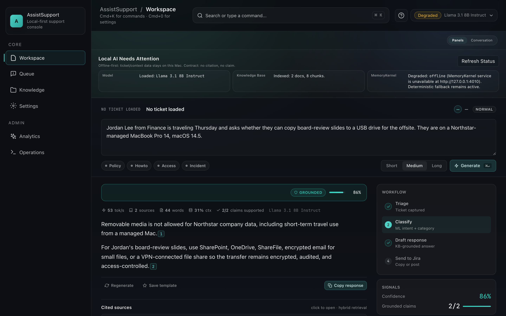

Your support team's second brain
ML-powered answers from your own knowledge base — in
under 25 ms, without sending a single query to the cloud.
Local LLM inference plus a hybrid ML search pipeline that drafts
accurate, KB-grounded IT support responses entirely on the
operator's laptop. SQLCipher AES-256 at rest, a self-improving
feedback loop, and an ops surface for deploy, rollback, and
eval — all shipped as a single Tauri app.

Workspace · composer · KB-grounded answer · triage rail
Five feature pillars
— local inference · hybrid search · trust-gated · self-improving · encrypted
01
ML intent classification
A calibrated logistic-regression classifier routes every
ticket — policy, howto, access, incident — in under 5 ms.
0.914 macro-F1
02
Sub-25 ms hybrid search
TF-IDF retrieval plus a ms-marco-MiniLM-L-6-v2 cross-encoder
reranker — citations are real files, not hallucinations.
22 ms p50 · 46 ms p95
03
Trust-gated responses
Confidence modes (answer · clarify · abstain) plus inline [n]
citations link every sentence back to its source.
0.93 grounded · 0.96 faithful
04
Self-improving feedback loop
Low-confidence queries get clustered into KB gaps, ranked by
impact, and turned into a prioritized list of articles.
14 gap clusters · 87 tickets
05
Local-first & encrypted
SQLCipher AES-256 at rest, local Ollama inference. Zero data
leaves the machine. Ships with deploy / rollback / eval ops.
SQLCipher · Ollama · Tauri 2
Ticket deflection
25
%
of tier-1 tickets never reach a human — drafts accepted and
pasted into Jira as-is.
benchmark: prior Aisera deployment
Hybrid search latency
<25
ms
p50 across TF-IDF candidate retrieval plus cross-encoder
reranker — instant in the composer.
measured on M3 MacBook Pro · eval run #4812
KB articles indexed
3,500
+
local SQLite index of policies, runbooks, how-tos, and incident
retrospectives — refreshed nightly.
nightly reindex · 46 s · see Ops surface